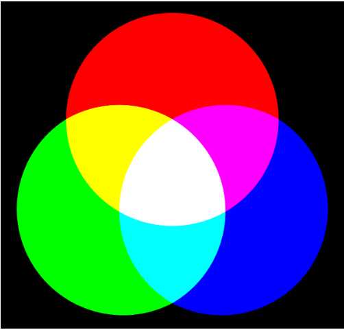

Los colores RGB que vemos en el monitor pueden llegar a ser muy distintos a la hora de imprimirse en el espacio de color CMYK. Pero hay formas de controlar los colores de tu obra y evitar sorpresas a la hora de imprimir. Este tutorial explica los modos de color RGB y CMYK y ofrece consejos imprescindibles para los artistas. Cuando lees documentos o ves imágenes en un monitor, los colores están compuestos por el modo de color RGB (Red, Green y Blue), porque todos los píxeles de un monitor están formados por esos tres colores. En las imágenes impresas por una impresora de tinta doméstica o industrial, o una imprenta offset, los colores se crean en CMYK (Cyan, Magenta, Yellow y Black), que son los colores de las tintas que tiene la impresora. CLIP STUDIO PAINT incorpora ambos modos de color y es importante diferenciarlos, pues siguen procesos distintos para reproducir los colores.
Nuestro sentido de la vista influye en cómo percibimos los colores. La retina, una membrana de células nerviosas concentradas en la parte posterior del globo ocular, contiene dos tipos de células fotorreceptoras: los conos y los bastones. Los bastones detectan los niveles de luz y los conos, de color. Los conos pueden ser de tres tipos, según la longitud de onda a la que reaccionen: A la luz de onda corta la llamamos “azul”, a la onda media “verde” y a la larga, “rojo”. En términos científicos, los seres humanos somos tricromáticos. Colores primarios aditivos: RGB Gracias a la tricromía somos capaces de percibir los colores primarios aditivos. Dadas tres fuentes de luz, si cada una emite una longitud de onda de forma que las tres abarquen todo el espectro visible, percibiremos el color blanco. Si usamos fuentes de luz (colores luz), comenzamos desde la oscuridad (negro) y vamos añadiendo luces de colores —de ahí el término “aditivo”. Para crear la luz blanca, se suma la misma cantidad de cada uno de los tres colores primarios. Los colores que percibimos dependen de la cantidad que estemos añadiendo de cada longitud de onda. Como estamos añadiendo luz, asociamos los tres colores primarios aditivos a dispositivos que emiten luz, como monitores o pantallas de televisión. Primarios sustractivos: CMY + K Los conos de nuestros ojos también perciben los colores primarios substractivos. Los colores primarios sustractivos son el cian, el magenta y el amarillo, y se refieren al color que refleja una superficie que absorbe luz blanca. En sistemas de impresión, dada una superficie blanca (un papel), se añade tinta (o pintura) de color cian, magenta y amarillo hasta conseguir el tono negro. Podemos decir que el amarillo es una especie de sustractor de ondas cortas, el magenta un sustractor de ondas medias y el cian, de ondas largas. Nota: No es posible conseguir un negro puro absoluto mezclando cian, magenta y amarillo, porque en realidad ninguno de esos pigmentos es lo suficientemente puro. Lo máximo que conseguiremos es un marrón muy oscuro. Por eso, al imprimir, se le añade el negro a los primarios. Se usa la letra “K” para no confundirla con la “B” del azul. El negro, sin embargo, no es un color primario. Espacio de color Los tres colores primarios no solo nos ayudan a describir los colores, sino también nos sirven para interpretar las relaciones entre los colores. Para ello, asignamos a cada primario un eje de coordenadas en un espacio tridimensional.
| Experiencias | Crecimiento | Aporte |
|---|---|---|
| Viajar por el mundo | Ser Ing | Fundar un refugio de amimales |
| Leer muchos libros | Poder manejar los diferentes lenguajes de programacion | Ayudar a las personas en cituacion de calle |
¿Qué es scrum? Scrum es un marco de gestión de proyectos ágil que ayuda a los equipos a estructurar y gestionar su trabajo a través de un conjunto de valores, principios y prácticas. Al igual que un equipo de rugby (de donde recibe su nombre) que se entrena para el gran partido, el scrum anima a los equipos a aprender a través de las experiencias, a organizarse mientras trabajan en un problema y a reflexionar sobre sus victorias y derrotas para mejorar continuamente. Si bien el scrum del que hablo lo utilizan con más frecuencia los equipos de desarrollo de software, sus principios y lecciones se pueden aplicar a todo tipo de trabajo en equipo. Esta es una de las razones por las que el scrum es tan popular. Considerado a menudo como un marco ágil de gestión de proyectos, scrum describe un conjunto de reuniones, herramientas y funciones que funcionan en conjunto para ayudar a los equipos a estructurar y gestionar su trabajo. En este artículo, analizaremos cómo se compone un marco de scrum tradicional con la ayuda de la guía de metodología scrum y de David West, director ejecutivo de Scrum.org. También incluiremos ejemplos de cómo vemos que nuestros clientes se desvían de estos fundamentos para adaptarse a sus necesidades específicas. Para ello, nuestra propia Megan Cook, directora de producto de Jira y antigua entrenadora de Agile, dará consejos y trucos en nuestra serie de vídeos del orientador ágil:
 Metodología ágil frente a scrum
La gente suele pensar que "scrum" y "metodología ágil" son lo mismo, porque el scrum se centra en la mejora continua, que es un principio fundamental de la agilidad. Sin embargo, el scrum es un marco para realizar el trabajo, mientras que la agilidad es una filosofía. La filosofía ágil se centra en la mejora continua e incremental mediante publicaciones pequeñas y frecuentes. Realmente no se puede "optar por la agilidad", ya que se necesita la dedicación de todo el equipo para cambiar su forma de pensar sobre la oferta de valor a los clientes. Pero sí se puede utilizar un marco como el de scrum para poder empezar a pensar de esa manera y a practicar la incorporación de principios ágiles en la comunicación y el trabajo diarios.
La diferencia entre la metodología ágil y la definición de "scrum" se encuentra en la guía de scrum y en el Manifiesto ágil. El Manifiesto ágil describe cuatro valores:
Personas e interacciones por encima de los procesos y las herramientas
Software de trabajo por encima de la documentación exhaustiva
Colaboración con los clientes por encima de la negociación de contratos
Responder al cambio en lugar de seguir un plan
La definición de scrum se basa en el empirismo y el pensamiento ágil. El empirismo sostiene que el conocimiento proviene de la experiencia y que las decisiones se toman en función de lo observado. El pensamiento lean reduce el despilfarro y se centra en lo esencial. El marco de scrum es heurístico: se basa en el aprendizaje continuo y en el ajuste a los factores fluctuantes. Reconoce que el equipo no lo sabe todo al principio de un proyecto y que evolucionará a lo largo de la experiencia. El scrum está estructurado para ayudar a los equipos a adaptarse de forma natural a las condiciones y los requisitos de los usuarios cambiantes, con el cambio de prioridades integrado en el proceso y ciclos de lanzamiento cortos para que tu equipo pueda aprender y mejorar constantemente
Metodología ágil frente a scrum
La gente suele pensar que "scrum" y "metodología ágil" son lo mismo, porque el scrum se centra en la mejora continua, que es un principio fundamental de la agilidad. Sin embargo, el scrum es un marco para realizar el trabajo, mientras que la agilidad es una filosofía. La filosofía ágil se centra en la mejora continua e incremental mediante publicaciones pequeñas y frecuentes. Realmente no se puede "optar por la agilidad", ya que se necesita la dedicación de todo el equipo para cambiar su forma de pensar sobre la oferta de valor a los clientes. Pero sí se puede utilizar un marco como el de scrum para poder empezar a pensar de esa manera y a practicar la incorporación de principios ágiles en la comunicación y el trabajo diarios.
La diferencia entre la metodología ágil y la definición de "scrum" se encuentra en la guía de scrum y en el Manifiesto ágil. El Manifiesto ágil describe cuatro valores:
Personas e interacciones por encima de los procesos y las herramientas
Software de trabajo por encima de la documentación exhaustiva
Colaboración con los clientes por encima de la negociación de contratos
Responder al cambio en lugar de seguir un plan
La definición de scrum se basa en el empirismo y el pensamiento ágil. El empirismo sostiene que el conocimiento proviene de la experiencia y que las decisiones se toman en función de lo observado. El pensamiento lean reduce el despilfarro y se centra en lo esencial. El marco de scrum es heurístico: se basa en el aprendizaje continuo y en el ajuste a los factores fluctuantes. Reconoce que el equipo no lo sabe todo al principio de un proyecto y que evolucionará a lo largo de la experiencia. El scrum está estructurado para ayudar a los equipos a adaptarse de forma natural a las condiciones y los requisitos de los usuarios cambiantes, con el cambio de prioridades integrado en el proceso y ciclos de lanzamiento cortos para que tu equipo pueda aprender y mejorar constantemente